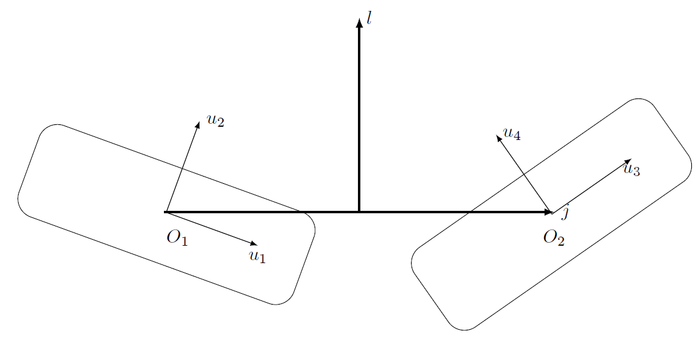

Masterarbeit: In meiner Masterarbeit habe ich mich mit der
Auswertung von Messdaten eines Teilchenbeschleunigers beschäftigt.
Ziel war es, die Unterschiede zwischen verschiedenen Methoden zur Bestimmung eines grundlegenden Parameters
der Teilchenphysik zu untersuchen, der die Wechselwirkung zwischen bestimmten Quark-Arten beschreibt.
Verwendete Tools: Python, NumPy, SciPy, Matplotlib

Projektarbeit: In diesem Projekt habe ich Datensätze des internationalen Belle-Experiments analysiert, das von 1999 bis 2010 in Japan durchgeführt wurde.
Ziel war es, Erkenntnisse über einen speziellen Teilchenzerfall zu gewinnen.
Verwendete Tools: C++, CERN ROOT

Projektarbeit: In diesem Projekt habe ich Kriterien für die Überlappung von superelliptischen Teilchen entwickelt, die für Monte-Carlo-Simulationen wichtig sind.
Die Aufgabe bestand darin, ein mathematisches Kriterium zu entwickeln, das bestimmt, ob sich diese Teilchen überlappen, berühren oder getrennt sind.
Verwendete Tools: Mathematica, Fortran

Bachelorarbeit: In meiner Bachelorarbeit habe ich untersucht, wie die Ausbreitung von Licht in einem optischen Wellenleiter durch die Platzierung von Nanopartikeln beeinflusst werden kann.
Ziel war es, herauszufinden, ob sich so optische Dioden realisieren lassen.
Verwendete Tools: Python, Pandas, Netgen/NGSolve